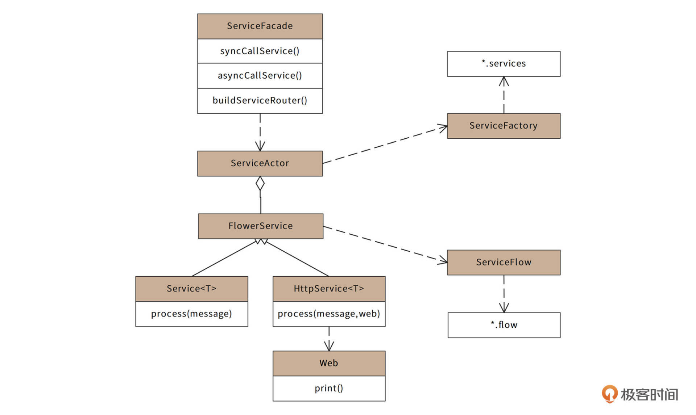
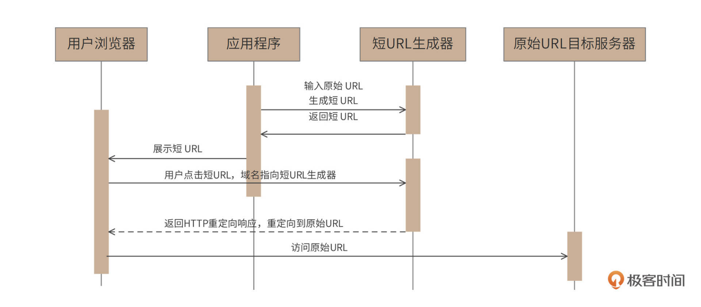
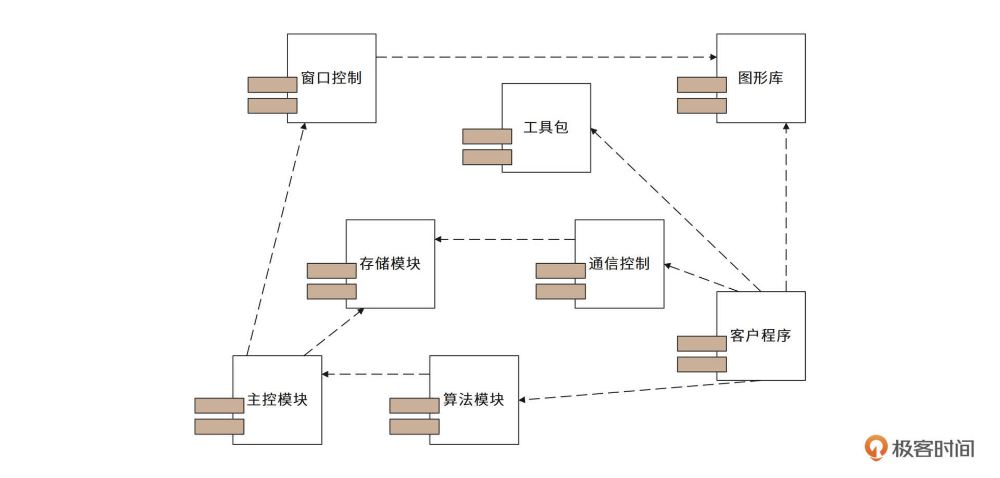
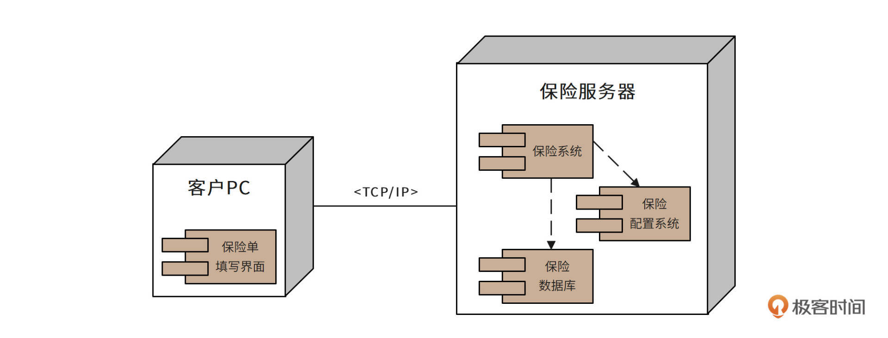
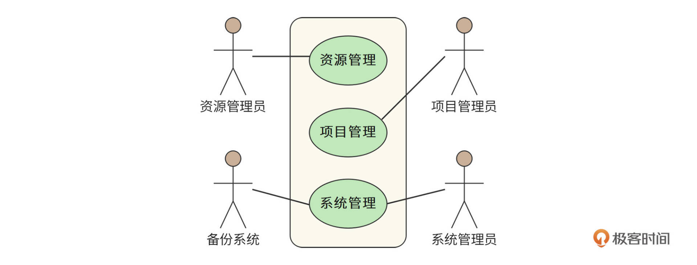
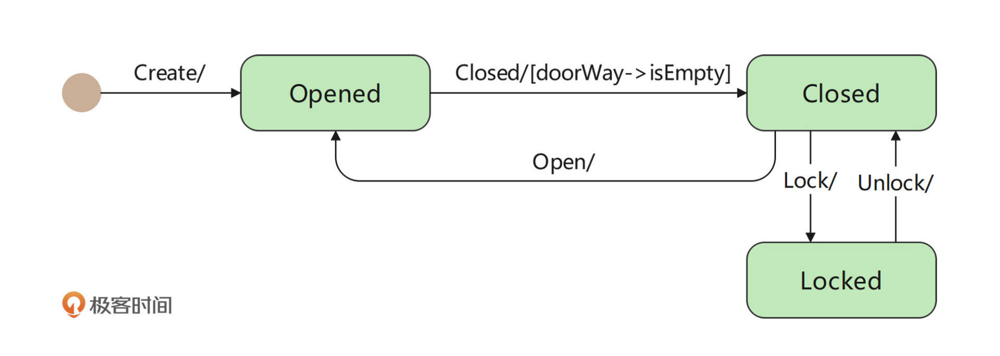
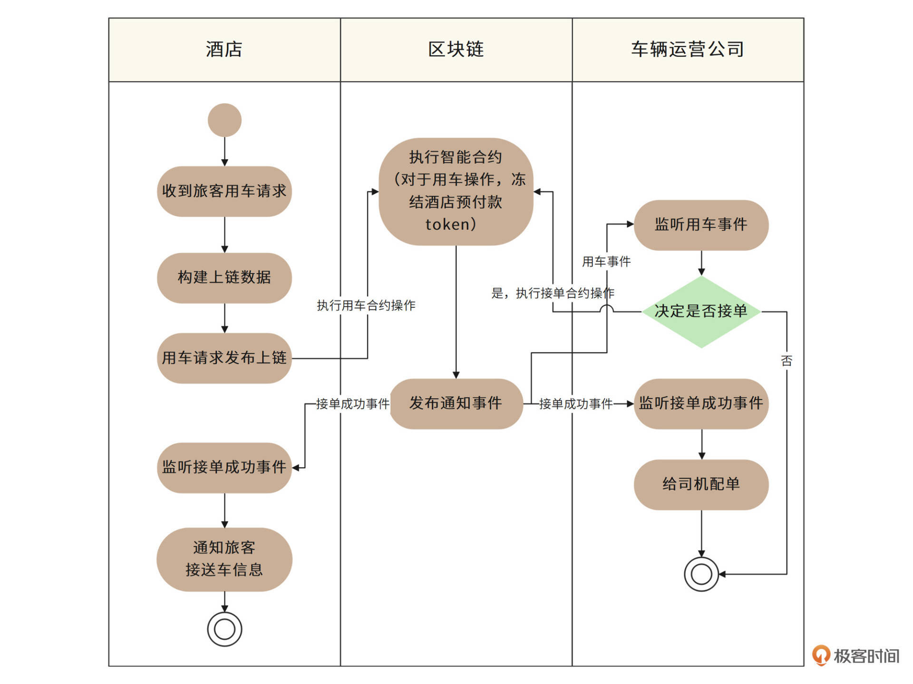
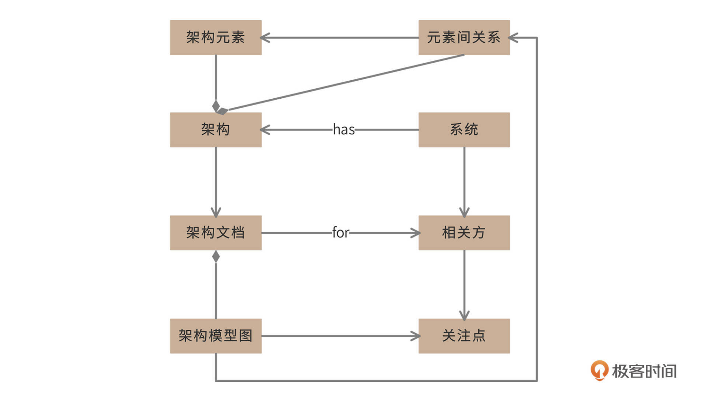

- 00 开篇词 “附身”大厂架构师，身临其境设计高并发系统.md.html
- 01 软件建模与文档：架构师怎样绘制系统架构蓝图？.md.html
- 02 高并发架构设计方法：面对高并发，怎么对症下药？.md.html
- 03 短 URL 生成器设计：百亿短 URL 怎样做到无冲突？.md.html
- 04 网页爬虫设计：如何下载千亿级网页？.md.html
- 05 网盘系统设计：万亿 GB 网盘如何实现秒传与限速？.md.html
- 06 短视频系统设计：如何支持三千万用户同时在线看视频？.md.html
- 07 海量数据处理技术回顾：为什么分布式会遇到 CAP 难题？.md.html
- 08 秒杀系统设计：你的系统可以应对万人抢购盛况吗？.md.html
- 09 交友系统设计：哪种地理空间邻近算法更快？.md.html
- 10 搜索引擎设计：信息搜索怎么避免大海捞针？.md.html
- 11 反应式编程框架设计：如何使方法调用无阻塞等待？.md.html
- 12 高性能架构的三板斧：分析系统性能问题从哪里入手？.md.html
- 13 微博系统设计：怎么应对热点事件的突发访问压力？.md.html
- 14 百科应用系统设计：机房被火烧了系统还能访问吗？.md.html
- 15 限流器设计：如何避免超预期的高并发压力压垮系统？.md.html
- 16 高可用架构的十种武器：怎么度量系统的可用性？.md.html
- 17 Web 应用防火墙：怎样拦截恶意用户的非法请求？.md.html
- 18 加解密服务平台：如何让敏感数据存储与传输更安全？.md.html
- 19 许可型区块链重构：无中心的区块链怎么做到可信任？.md.html
- 20 网约车系统设计：怎样设计一个日赚 5 亿的网约车系统？.md.html
- 21 网约车系统重构：如何用 DDD 重构网约车系统设计？.md.html
- 22 大数据平台设计：如何用数据为用户创造价值？.md.html
- 结束语 一个架构师的一天.md.html
- 捐赠
01 软件建模与文档：架构师怎样绘制系统架构蓝图？
你好，我是李智慧。
我在[开篇词]中说过，我们课程中的一系列软件架构设计是用设计文档的形式呈现的。所以，在拆解一个个案例之前，我们先来了解一些关于软件设计文档的基础知识，这样你在学习后面的具体案例时，就能更加清楚地理解文档是基于什么方式来组织的了。
首先，请你设想这样一个场景：如果公司安排你做架构师，要你在项目开发前期进行软件架构设计，你该如何开展你的工作？如何输出你的工作成果？如何确定你的设计是否满足用户需求？你是否有把握最后交付的软件是满足要求的？是否有把握让团队每个工程师清楚自己的职责范围并有效地完成开发工作……
这些问题其实都是软件开发管理与技术架构的核心诉求，而架构师的核心工作就是做好软件设计，解决这些诉求。这些问题搞定了，软件的开发过程和结果也就都得到了保证。那怎么实现这些诉求呢？我们主要的手段就是软件建模，以及将这些软件模型组织成一篇有价值的软件设计文档。
软件建模
所谓软件建模，就是为要开发的软件建造模型。
模型是对客观存在的抽象，例如著名的物理学公式\(E=mc^{2}\)，就是质量能量转换的物理规律的数学模型。除了物理学公式以外，还有一些东西也是模型，比如地图是对地理空间的建模；机械装置、电子电路、建筑设计的各种图纸是对物理实体的建模。而软件，也可以通过各种图进行建模。
软件系统庞大复杂，通过软件建模，我们可以抽象软件系统的主要特征和组成部分，梳理这些关键组成部分的关系。在软件开发过程中依照模型的约束开发，系统整体的格局和关系就会可控。相关人员从始至终都能清晰了解软件的蓝图和当前的进展，不同的开发工程师会清晰自己开发的模块和其他同事工作内容的关系与依赖，并按照这些模型开发代码。
那么我们是根据什么进行软件建模的呢？要解答这个疑问，你需要先知道，在软件开发中，有两个客观存在。
一个是我们要解决的领域问题。比如我们要开发一个电子商务网站，那么客观的领域问题就是如何做生意，卖家如何管理商品、管理订单、服务用户，买家如何挑选商品，如何下订单，如何支付等等。对这些客观领域问题的抽象就是各种功能及其关系、各种模型对象及其关系、各种业务处理流程。
另一个客观存在就是最终开发出来的软件系统。软件系统要解决的问题包括软件由哪些主要类组成，这些类如何组织构成一个个的组件，这些类和组件之间的依赖关系如何，运行期如何调用，需要部署多少台服务器，服务器之间如何通信等。
而对这两个客观存在进行抽象化处理的手段，就是我们的软件模型。
一方面我们要对领域问题和要设计的软件系统进行分析、设计、抽象，另一方面，我们根据抽象出来的模型进行开发，最终实现出一个软件系统，这就是软件开发的主要过程。而对领域问题和软件系统进行分析、设计和抽象的这个过程，就是软件建模设计。
软件设计方法
因此，软件设计其实就是软件建模的过程。我们通过软件建模工具，将软件模型画出来，实现软件设计。
在实践中，通常用来进行软件建模画图的工具是UML，统一建模语言。UML包含的软件模型有10种，其中常用的有7种：类图、序列图、组件图、部署图、用例图、状态图和活动图。
下面我们简单了解下这7种常用UML图的使用场景和基本样例。在专栏后面的设计文档中，你会多次见到它们，看多了，你就懂了，也就自然会画了。当然，如果你想更详细地学习UML知识，我也非常鼓励，并且推荐你阅读马丁富勒的《UML精粹》一书。
类图
类图是最常见的UML图形，用来描述类的特性和类之间的静态关系。
一个类包含三个部分：类的名字、类的属性列表和类的方法列表。类之间有6种静态关系：关联、依赖、组合、聚合、继承、泛化。把相关的一组类及其关系用一张图画出来，就是类图。
比如你在后面的课程中会遇到下面这幅图，它就是类图。你可以把我上面说的类图包含元素和图片一一对照，感受类图的用法。

时序图
类图之外，另一种常用的图是时序图，类图描述类之间的静态关系，时序图则用来描述参与者之间的动态调用关系。

从图中可以看出，每个参与者有一条垂直向下的生命线。而参与者之间的消息从上到下表示其调用的前后顺序关系，这正是“时序图”这个词的由来。每个生命线都有若干个激活条，也就是那些细长的矩形条，只要这个条出现，就表示参与者是激活状态的。
时序图通常用于表示参与者之间的交互，这个参与者可以是类对象，也可以是更大粒度的参与者，比如组件、服务器、子系统等。总之，只要是描述不同参与者之间交互的，都可以使用时序图。
组件图
组件是比类粒度更大的设计元素，一个组件中通常包含很多个类。组件图有的时候和包图的用途比较接近，组件图通常用来描述物理上的组件，比如一个JAR、一个DLL等等。在实践中，我们进行模块设计的时候，用得更多的就是组件图。

组件图描述组件之间的静态关系，主要是依赖关系，如果你想要描述组件之间的动态调用关系，可以使用组件时序图，以组件作为参与者，描述组件之间的消息调用关系。
部署图
部署图描述软件系统的最终部署情况，比如需要部署多少服务器，关键组件都部署在哪些服务器上。

部署图是软件系统最终物理呈现的蓝图，根据部署图，所有相关者，诸如客户、老板、工程师都能清晰地了解到最终运行的系统在物理上是什么样子，和现有的系统服务器的关系，和第三方服务器的关系。根据部署图，还可以估算服务器和第三方软件的采购成本。
因此部署图是整个软件设计模型中，比较宏观的一种图，是在设计早期就需要画的一种模型图。根据部署图，各方可以讨论对这个方案是否认可。只有对部署图达成共识，才能继续后面的细节设计。
用例图
用例图通过反映用户和软件系统的交互，描述系统的功能需求。

图中小人形象的元素，被称为角色，角色可以是人，也可以是其他的系统。系统的功能可能会很复杂，所以一张用例图可能只包含其中一小部分功能，这些功能被一个矩形框框起来，这个矩形框被称为用例的边界。框里的椭圆表示一个一个的功能，功能之间可以调用依赖，也可以进行功能扩展。
状态图
状态图用来展示单个对象生命周期的状态变迁。
业务系统中，很多重要的领域对象都有比较复杂的状态变迁，比如账号，有创建状态、激活状态、冻结状态、欠费状态等等各种状态。此外，用户、订单、商品、红包这些常见的领域模型都有多种状态。
这些状态的变迁描述可以在用例图中用文字描述，随着角色的各种操作而改变，但是用这种方式描述，状态散乱在各处，不要说开发的时候容易搞错，就是产品经理自己在设计的时候，也容易搞错对象的状态变迁。
UML的状态图可以很好地解决这一问题，一张状态图描述一个对象生命周期的各种状态，及其变迁的关系。如图所示，门的状态有开Opened、关Closed和锁Locked三种，状态与变迁关系用一张状态图就可以搞定。

活动图
活动图主要用来描述过程逻辑和业务流程。UML中没有流程图，很多时候，人们用活动图代替流程图。

活动图和早期流程图的图形元素也很接近，实心圆代表流程开始，空心圆代表流程结束，圆角矩形表示活动，菱形表示分支判断。
此外，活动图引入了一个重要的概念——泳道。活动图可以根据活动的范围，将活动根据领域、系统和角色等划分到不同的泳道中，使流程边界更加清晰。
我们上面介绍了UML建模常用的7种模型，那么这7种模型分别应用在软件设计的什么阶段？用来表达什么样的设计意图呢？
软件设计文档
软件设计文档就是架构师的主要工作成果，它需要阐释这节课开头提到的各种诉求，描绘软件的完整蓝图，而软件设计文档的主要组成部分就是软件模型。
软件设计过程可以拆分成需求分析、概要设计和详细设计三个阶段。
在需求分析阶段，主要是通过用例图来描述系统的功能与使用场景；对于关键的业务流程，可以通过活动图描述；如果在需求阶段就提出要和现有的某些子系统整合，那么可以通过时序图描述新系统和原来的子系统的调用关系；可以通过简化的类图进行领域模型抽象，并描述核心领域对象之间的关系；如果某些对象内部会有复杂的状态变化，比如用户、订单这些，可以用状态图进行描述。
在概要设计阶段，通过部署图描述系统最终的物理蓝图；通过组件图以及组件时序图设计软件主要模块及其关系；还可以通过组件活动图描述组件间的流程逻辑。
在详细设计阶段，主要输出的就是类图和类的时序图，指导最终的代码开发，如果某个类方法内部有比较复杂的逻辑，那么可以将这个方法的逻辑用活动图进行描述。
我们在每个设计阶段使用几种UML模型对领域或者系统进行建模，然后将这些模型配上必要的文字说明写入到文档中，就可以构成一篇软件设计文档了。
我们专栏中的十几讲软件设计案例，都是按照这样的方式组织的，你可以在学习的过程中，一方面了解各种系统软件是如何设计的，一方面也可以借鉴设计文档是如何写作的。
同时也要说明一下，设计文档的写法并没有一定之规，最重要的是这个文档能否向阅读者传递出架构师完整的设计意图。而不同的阅读者关注点是不同的，老板、客户、运维、测试、开发这些角色都是设计文档的阅读者，他们想要看到的东西显然是不一样的。
客户和测试人员可能更关注功能性需求和实现逻辑，老板和运维人员可能更关注非功能需求和整体架构，而开发人员可能更关注整体架构与关键技术细节。
我们专栏的案例基本上是以开发人员作为阅读视角进行编写的，你在阅读这些案例时，会明显感觉到我的表达方式和其他专栏文章不太一样，措辞会更“坚硬”一点，文字和读者的距离也有点“疏离”，而这正是设计文档自身的特质。
架构、系统，文档、相关人员之间的关系可以参考下面这张图。

每个软件系统都需要有一个架构，每个架构都包含若干架构元素。架构元素就是前面提到的服务器、组件、类、消息、用例、状态等等。这些元素之间的关系是什么？如何把它们组织在一起？我们可以用部署图、组件图、时序图等各种模型图来描述。
架构最终需要一个文档来承载，把这些模型图放进这个文档，再配以适当的文字说明，就是一篇架构设计文档。而设计文档是给人阅读的，这些人就是系统的相关方。不同的相关方关注点不同，也需要由不同的模型图来进行表达，所以架构师应该针对不同的相关方，使用不同的模型图输出不同的架构文档。
上面这张图是关于架构的架构图，也就是说，是关于软件模型的模型。我们下一篇会讲高并发系统的方法论，而方法论是关于方法的方法。
小结
软件设计就是在软件开发之前，对要解决的业务问题和对要实现的软件系统进行思考，并将这个思考的结果通过软件模型表达出来的过程。
人类作为万物之灵，最大的特点就是，在行动之前就已经在头脑中将行动的过程和行动的结果构建成了一个蓝图，然后将这个蓝图付诸实践。我们的祖先将第一块石头打磨成石器的时候，就已经拥有了这种能力。软件系统的开发是一个复杂的智力活动，参与其中的我们更需要拥有构建蓝图并付诸实践的能力。
目前有个很火的词叫“元宇宙”，“元”通俗地讲，就是一切开始的地方，是关于如何用自己描述自己，是抽象之上的抽象。这种“元”能力对架构师而言，非常重要。架构师只有掌握各种技术背后的技术，了解各种问题背后的问题，才能超越当下的种种羁绊，设计出面向未来的架构。
思考题
假设时光倒流，你回到2003年，成为淘宝的架构师，你将如何设计淘宝的系统架构？请使用在线绘图工具www.draw.io 或者你熟悉的其他UML建模工具绘制满足淘宝早期应用场景的用例图以及部署图。如果你有什么灵感，或者遇到什么问题，欢迎在评论区留言，我们一起探讨。
也欢迎把这节课分享给更多对高并发架构设计感兴趣的朋友，我们共同进步。
© 2019 - 2023 Liangliang Lee. Powered by gin and hexo-theme-book.